Classifications
Theory
These are exercises and solutions meant as a compendium to my talk on Model Selection and Model Building.
I have prepared some Lecture Slides for this session.
Our Resarch Project
Today, we are looking at a big (and entirely fictional) data base of the common house sparrow (Passer domesticus). In particular, we are interested in the Evolution of Passer domesticus in Response to Climate Change which was previously explained here.
The Data
I have created a large data set for this exercise which is available here and we previously cleaned up so that is now usable here.
Reading the Data into R
Let’s start by reading the data into R and taking an initial look at it:
Sparrows_df <- readRDS(file.path("Data", "SparrowDataClimate.rds"))
head(Sparrows_df)
## Index Latitude Longitude Climate Population.Status Weight Height Wing.Chord Colour Sex Nesting.Site Nesting.Height Number.of.Eggs Egg.Weight Flock Home.Range Predator.Presence Predator.Type
## 1 SI 60 100 Continental Native 34.05 12.87 6.67 Brown Male <NA> NA NA NA B Large Yes Avian
## 2 SI 60 100 Continental Native 34.86 13.68 6.79 Grey Male <NA> NA NA NA B Large Yes Avian
## 3 SI 60 100 Continental Native 32.34 12.66 6.64 Black Female Shrub 35.60 1 3.21 C Large Yes Avian
## 4 SI 60 100 Continental Native 34.78 15.09 7.00 Brown Female Shrub 47.75 0 NA E Large Yes Avian
## 5 SI 60 100 Continental Native 35.01 13.82 6.81 Grey Male <NA> NA NA NA B Large Yes Avian
## 6 SI 60 100 Continental Native 32.36 12.67 6.64 Brown Female Shrub 32.47 1 3.17 E Large Yes Avian
## TAvg TSD
## 1 269.9596 15.71819
## 2 269.9596 15.71819
## 3 269.9596 15.71819
## 4 269.9596 15.71819
## 5 269.9596 15.71819
## 6 269.9596 15.71819
Hypotheses
Let’s remember our hypotheses:
- Sparrow Morphology is determined by:
A. Climate Conditions with sparrows in stable, warm environments fairing better than those in colder, less stable ones.
B. Competition with sparrows in small flocks doing better than those in big flocks.
C. Predation with sparrows under pressure of predation doing worse than those without. - Sites accurately represent sparrow morphology. This may mean:
A. Population status as inferred through morphology.
B. Site index as inferred through morphology.
C. Climate as inferred through morphology.
Quite obviously, hypothesis 2 is the only one lending itself well to classification exercises. In fact, what we want to answer is the question: “Can we successfully classify populations at different sites according to their morphological expressions?".
R Environment
For this exercise, we will need the following packages:
install.load.package <- function(x) {
if (!require(x, character.only = TRUE)) {
install.packages(x, repos = "http://cran.us.r-project.org")
}
require(x, character.only = TRUE)
}
package_vec <- c(
"ggplot2", # for visualisation
"mclust", # for k-means clustering,
"vegan", # for distance matrices in hierarchical clustering
"rpart", # for decision trees
"rpart.plot", # for plotting decision trees
"randomForest", # for randomForest classifier
"car", # check multicollinearity
"MASS" # for ordinal logistic regression
)
sapply(package_vec, install.load.package)
## ggplot2 mclust vegan rpart rpart.plot randomForest car MASS
## TRUE TRUE TRUE TRUE TRUE TRUE TRUE TRUE
Using the above function is way more sophisticated than the usual install.packages() & library() approach since it automatically detects which packages require installing and only install these thus not overwriting already installed packages.
Logistic Regression
Remember the Assumptions of Logistic Regression:
- Absence of influential outliers
- Absence of multi-collinearity
- Predictor Variables and log odds are related in a linear fashion
Binary Logistic Regression
Binary Logistic regression only accommodates binary outcomes. This leaves only one of our hypotheses open for investigation - 2.A. Population Status - since this is the only response variable boasting two levels.
To reduce the effect of as many confounding variables as possible, I reduce the data set to just those observations belonging to our station in Siberia and Manitoba. Both are located at very similar latitudes. They really only differ in their climate condition and the population status:
LogReg_df <- Sparrows_df[Sparrows_df$Index == "MA" | Sparrows_df$Index == "SI", c("Population.Status", "Weight", "Height", "Wing.Chord")]
LogReg_df$PS <- as.numeric(LogReg_df$Population.Status) - 1 # make climate numeric for model
Initial Model & Collinearity
Let’s start with the biggest model we can build here and then assess if our assumptions are met:
H2_LogReg_mod <- glm(PS ~ Weight + Height + Wing.Chord,
data = LogReg_df,
family = binomial(link = "logit"),
)
summary(H2_LogReg_mod)
##
## Call:
## glm(formula = PS ~ Weight + Height + Wing.Chord, family = binomial(link = "logit"),
## data = LogReg_df)
##
## Deviance Residuals:
## Min 1Q Median 3Q Max
## -2.657e-05 -2.110e-08 -2.110e-08 2.110e-08 2.855e-05
##
## Coefficients:
## Estimate Std. Error z value Pr(>|z|)
## (Intercept) 1.557e+03 3.312e+07 0.000 1.000
## Weight 7.242e+01 3.735e+04 0.002 0.998
## Height 2.153e+01 1.061e+06 0.000 1.000
## Wing.Chord -6.247e+02 6.928e+06 0.000 1.000
##
## (Dispersion parameter for binomial family taken to be 1)
##
## Null deviance: 1.8437e+02 on 132 degrees of freedom
## Residual deviance: 6.8926e-09 on 129 degrees of freedom
## AIC: 8
##
## Number of Fisher Scoring iterations: 25
Well… nothing here is significant. Let’s see what the culprit might be. With morphological traits, you are often looking at a whole set of collinearity, so let’s start by investigating that:
vif(H2_LogReg_mod)
## Weight Height Wing.Chord
## 9.409985 6550.394451 6342.683550
A Variance Inflation Factor (VIF) value of $\geq5-10$ is seen as identifying problematic collinearity. Quite obviously, this is the case. We need to throw away some predictors. I only want to keep Weight.
Weight Model and Further Assumptions
Let’s run a simplified model that just used Weight as a predictor:
H2_LogReg_mod <- glm(PS ~ Weight,
data = LogReg_df,
family = binomial(link = "logit")
)
summary(H2_LogReg_mod)
##
## Call:
## glm(formula = PS ~ Weight, family = binomial(link = "logit"),
## data = LogReg_df)
##
## Deviance Residuals:
## Min 1Q Median 3Q Max
## -2.1980 -0.5331 -0.1235 0.5419 1.9067
##
## Coefficients:
## Estimate Std. Error z value Pr(>|z|)
## (Intercept) -46.3244 7.8319 -5.915 3.32e-09 ***
## Weight 1.4052 0.2374 5.920 3.23e-09 ***
## ---
## Signif. codes: 0 '***' 0.001 '**' 0.01 '*' 0.05 '.' 0.1 ' ' 1
##
## (Dispersion parameter for binomial family taken to be 1)
##
## Null deviance: 184.37 on 132 degrees of freedom
## Residual deviance: 105.08 on 131 degrees of freedom
## AIC: 109.08
##
## Number of Fisher Scoring iterations: 5
A significant effect, huzzah! We still need to test for our assumptions, however. Checking for multicollinearity makes no sense since we only use one predictor, so we can skip that.
Linear Relationship between predictor(s) and log-odds of the output can be assessed as follows:
probabilities <- predict(H2_LogReg_mod, type = "response") # predict model response on original data
LogReg_df$Probs <- probabilities # safe probabilities to data frame
LogReg_df$LogOdds <- log(probabilities / (1 - probabilities)) # calculate log-odds
## Plot Log-Odds vs. Predictor
ggplot(data = LogReg_df, aes(x = Weight, y = LogOdds)) +
geom_point() +
geom_smooth(method = "lm", se = TRUE) +
theme_bw()
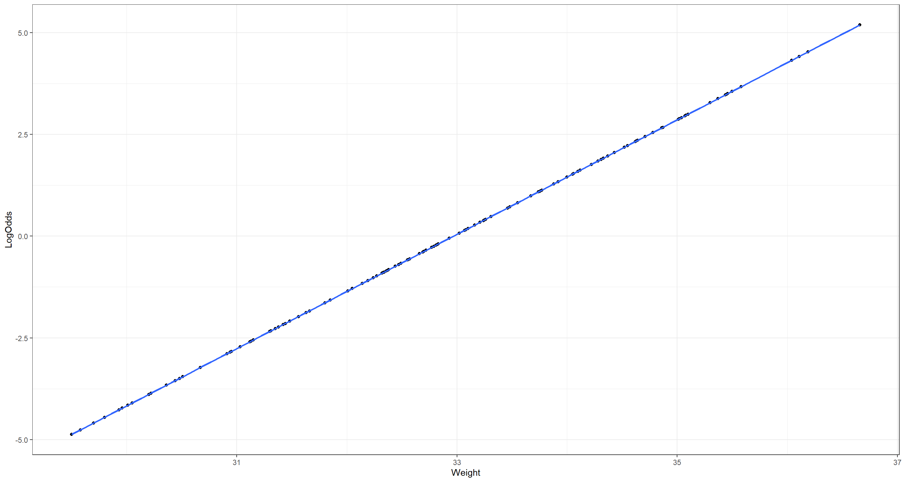
That is clearly linear relationship!
Moving on to our final assumption, we want to assess whether there are influential Outliers. For this, we want to look at the Cook’s distance as well as the standardised residuals per observation:
## Cook's distance
plot(H2_LogReg_mod, which = 4, id.n = 3)
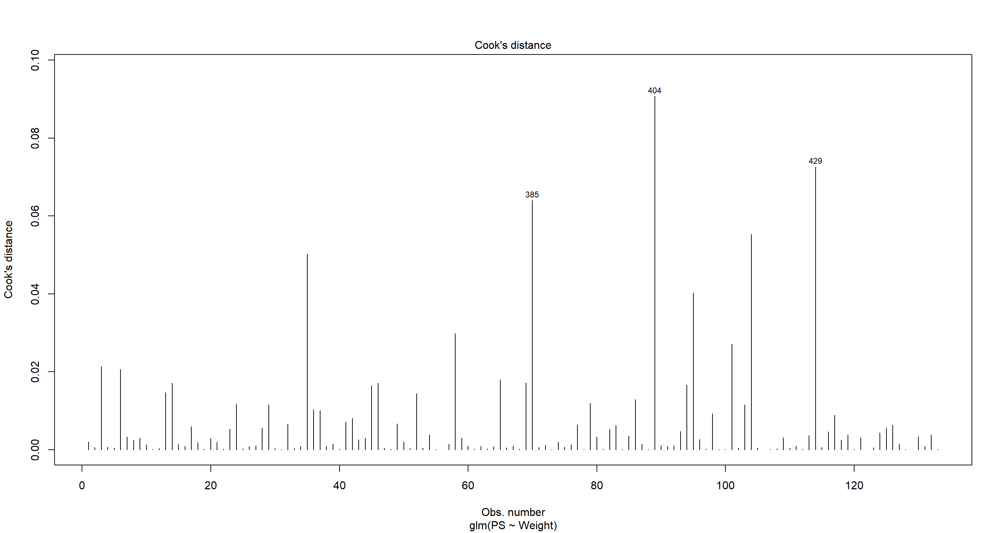
## Standardises Residuals
Outlier_df <- data.frame(
Residuals = resid(H2_LogReg_mod),
Index = 1:nrow(LogReg_df),
Outcome = factor(LogReg_df$PS)
)
Outlier_df$Std.Resid <- scale(Outlier_df$Residuals)
# Plot Residuals
ggplot(Outlier_df, aes(Outcome, Std.Resid)) +
geom_boxplot() +
theme_bw()
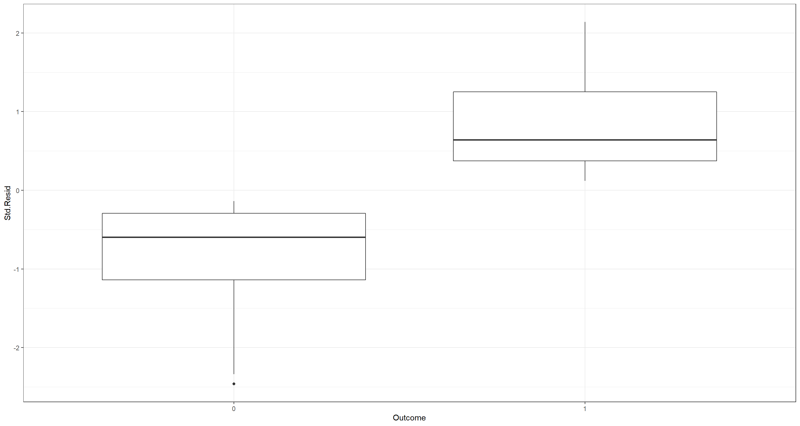 Both of these plots do not highlight any worrying influential outliers. An influential outliers would manifest with a prominent standardises residual ($|Std.Resid|\sim3$)/Cook’s distance.
Let’s finally plot what the model predicts:
ggplot(data = LogReg_df, aes(x = Weight, y = LogReg_df$PS)) +
geom_point() +
theme_bw() +
geom_smooth(
data = LogReg_df, aes(x = Weight, y = Probs),
method = "glm",
method.args = list(family = "binomial"),
se = TRUE
) +
labs(y = "Introduced Population")
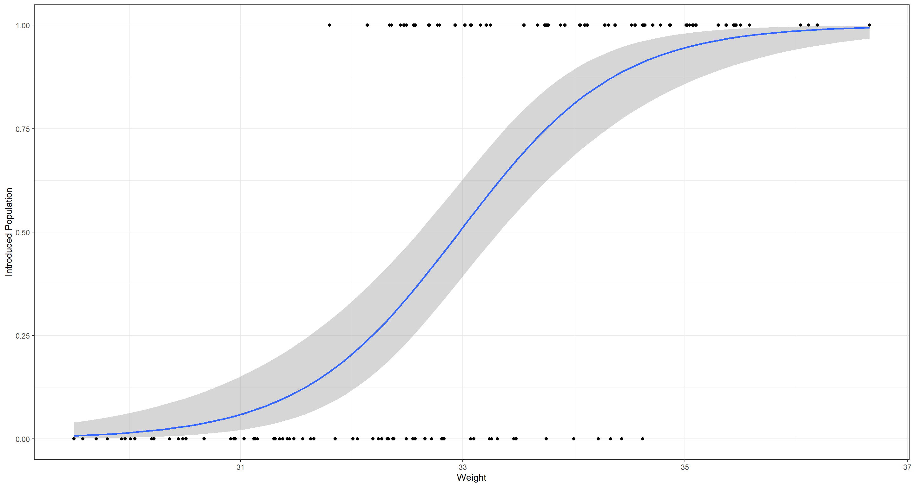
Ordinal Logistic Regression
Ordinal Logistic regression allows for multiple levels of the response variable so long as they are on an ordinal scale. Here, we could test all of our above hypotheses. However, I’d like to stick with 2.C. Climate for this example.
Again, to reduce the effect of as many confounding variables as possible, I reduce the data set to just those observations belonging to our station in Siberia, Manitoba, and also the United Kingdom this time. All three are located at very similar latitudes. They really only differ in their climate condition and the population status:
LogReg_df <- Sparrows_df[Sparrows_df$Index == "UK" | Sparrows_df$Index == "MA" | Sparrows_df$Index == "SI", c("Climate", "Weight", "Height", "Wing.Chord")]
LogReg_df$CL <- factor(as.numeric(LogReg_df$Climate) - 1) # make climate factored numeric for model
Initial Model & Collinearity
Let’s start with the biggest model we can build here and then assess if our assumptions are met:
H2_LogReg_mod <- polr(CL ~ Weight + Height + Wing.Chord,
data = LogReg_df,
Hess = TRUE
)
summary_table <- coef(summary(H2_LogReg_mod))
pval <- pnorm(abs(summary_table[, "t value"]), lower.tail = FALSE) * 2
summary_table <- cbind(summary_table, "p value" = round(pval, 6))
summary_table
## Value Std. Error t value p value
## Weight -0.4595719 0.09750018 -4.713549 2e-06
## Height 25.0808034 0.19522606 128.470573 0e+00
## Wing.Chord -164.1103857 0.51246129 -320.239573 0e+00
## 0|1 -788.2133893 0.11008589 -7159.985419 0e+00
## 1|2 -786.8019284 0.18747890 -4196.749302 0e+00
Well… a lot here is significant. We identified multicollinearity as a problem earlier. Let’s investigate that again:
vif(H2_LogReg_mod)
## Weight Height Wing.Chord
## 431.6796 294.6353 536.5452
Horrible!. A Variance Inflation Factor (VIF) value of $\geq5-10$ is seen as identifying problematic collinearity. Quite obviously, this is the case. We need to throw away some predictors. I only want to keep Weight.
Weight Model and Further Assumptions
Let’s run a simplified model that just used Weight as a predictor:
H2_LogReg_mod <- polr(CL ~ Weight,
data = LogReg_df,
Hess = TRUE
)
summary_table <- coef(summary(H2_LogReg_mod))
pval <- pnorm(abs(summary_table[, "t value"]), lower.tail = FALSE) * 2
summary_table <- cbind(summary_table, "p value" = round(pval, 6))
summary_table
## Value Std. Error t value p value
## Weight -0.020768177 0.0761669 -0.272666718 0.785109
## 0|1 -1.354848455 2.5131706 -0.539099272 0.589818
## 1|2 0.009549511 2.5112093 0.003802754 0.996966
Well… this model doesn’t help us at all in understanding climate through morphology of our sparrows. Let’s abandon this and move on to classification methods which are much better suited to this task.
K-Means Clustering
K-Means clustering is incredibly potent in identifying a number of appropriate clusters, their attributes, and sort observations into appropriate clusters.
Population Status Classifier
Let’s start with understanding population status through morphological traits:
Morph_df <- Sparrows_df[, c("Weight", "Height", "Wing.Chord", "Population.Status")]
H2_PS_mclust <- Mclust(Morph_df[-4], G = length(unique(Morph_df[, 4])))
plot(H2_PS_mclust, what = "uncertainty")
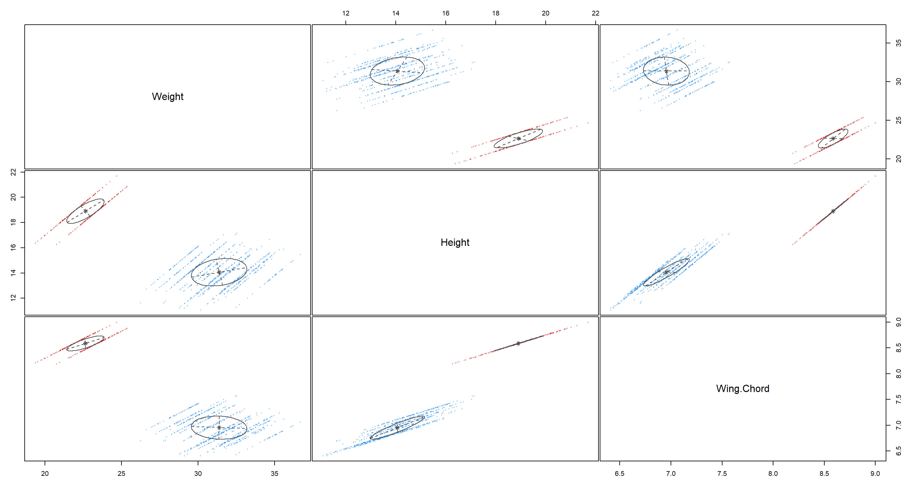
As we can see, K-means clustering is able to really neatly identify two groups in our data. But do they actually belong do the right groups of Population.Status? We’ll find out in Model Selection and Validation.
Site Classifier
On to our site index classification. Running the k-means clustering algorithm returns:
Morph_df <- Sparrows_df[, c("Weight", "Height", "Wing.Chord", "Index")]
H2_Index_mclust <- Mclust(Morph_df[-4], G = length(unique(Morph_df[, 4])))
plot(H2_Index_mclust, what = "uncertainty")
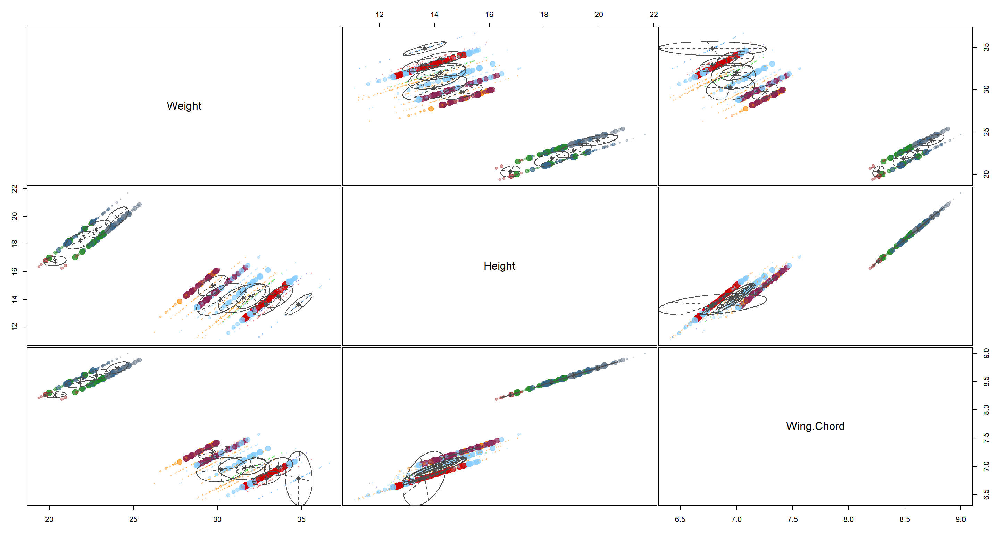
That’s a pretty bad classification. I would not place trust in these clusters seeing how much they overlap.
Climate Classifier
Lastly, turning to our climate classification using k-means classification:
Morph_df <- Sparrows_df[, c("Weight", "Height", "Wing.Chord", "Climate")]
H2_Climate_mclust <- Mclust(Morph_df[-4], G = length(unique(Morph_df[, 4])))
plot(H2_Climate_mclust, what = "uncertainty")
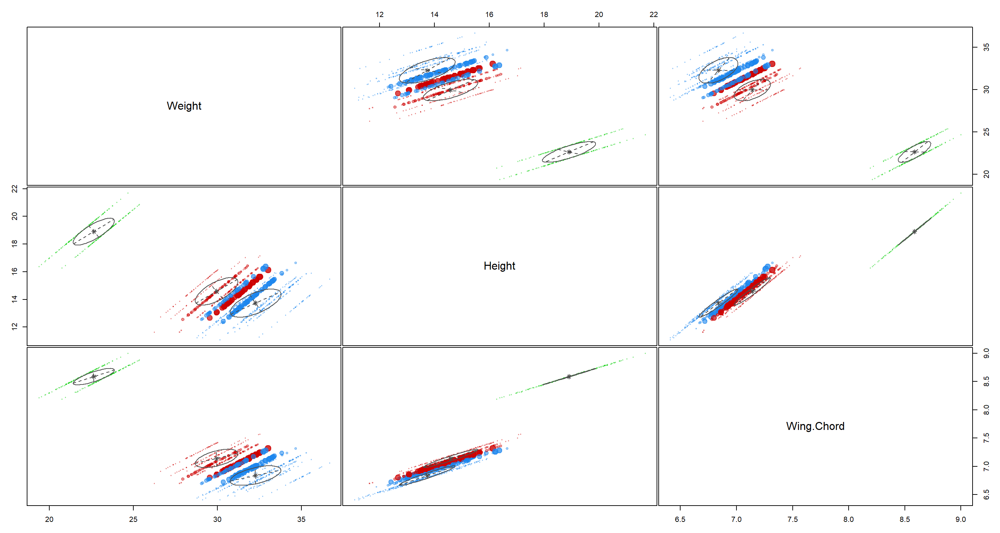 These clusters are decent although there is quite a bit of overlap between the blue and red cluster.
Optimal Model
K-means clustering is also able to identify the most “appropriate” number of clusters given the data and uncertainty of classification:
Morph_df <- Sparrows_df[, c("Weight", "Height", "Wing.Chord")]
dataBIC <- mclustBIC(Morph_df)
summary(dataBIC) # show summary of top-ranking models
## Best BIC values:
## VVV,7 EVV,7 EVV,8
## BIC 63.39237 -304.1895 -336.0531
## BIC diff 0.00000 -367.5819 -399.4455
plot(dataBIC)
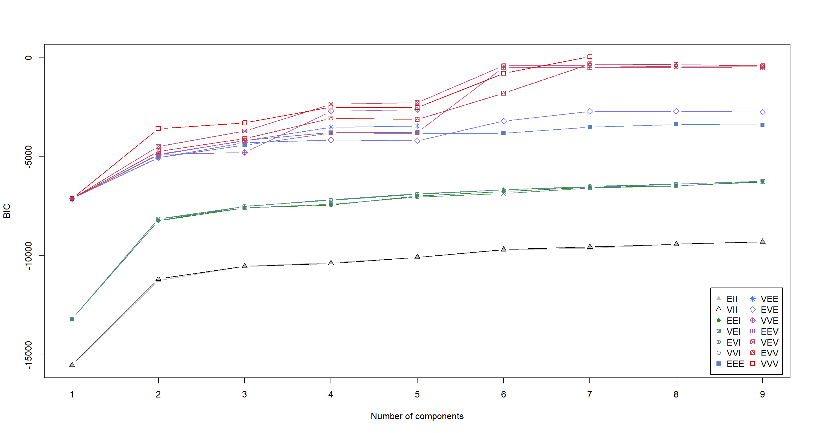
G <- as.numeric(strsplit(names(summary(dataBIC))[1], ",")[[1]][2])
H2_Opt_mclust <- Mclust(Morph_df, # data for the cluster model
G = G # BIC index for model to be built
)
H2_Opt_mclust[["parameters"]][["mean"]] # mean values of clusters
## [,1] [,2] [,3] [,4] [,5] [,6] [,7]
## Weight 34.830000 32.677280 33.63023 31.354892 30.146417 22.585240 22.796014
## Height 13.641765 13.570427 14.20721 14.317070 14.085826 18.847550 19.036621
## Wing.Chord 6.787059 6.780954 6.99186 7.044881 6.965047 8.576106 8.609035
plot(H2_Opt_mclust, what = "uncertainty")
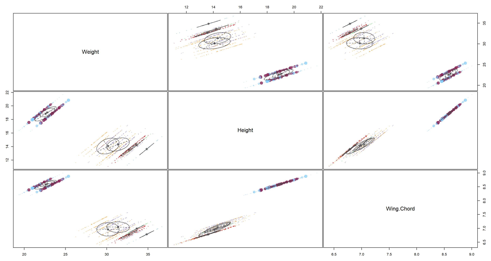
Here, K-means clustering would have us settle on 7 clusters. That does not coincide with anything we could really test for at this point. COnclusively, this model goes into the category of “Nice to have, but ultimately useless here”.
Summary of K-Means Clustering
So what do we take from this? Well… Population status was well explained all morphological traits and so would in turn also do a good job of being a proxy for the other when doing mixed regression models, for example. Hence, we might want to include this variable in future Regression Models.
Hierarchical Clustering
Moving on to hierarchical clustering, we luckily only need to create a few trees to start with:
Morph_df <- Sparrows_df[, c("Weight", "Height", "Wing.Chord")] # selecting morphology data
dist_mat <- dist(Morph_df) # distance matrix
## Hierarchical clustering using different linkages
H2_Hierachical_clas1 <- hclust(dist_mat, method = "complete")
H2_Hierachical_clas2 <- hclust(dist_mat, method = "single")
H2_Hierachical_clas3 <- hclust(dist_mat, method = "average")
## Plotting Hierarchies
par(mfrow = c(1, 3))
plot(H2_Hierachical_clas1, main = "complete")
plot(H2_Hierachical_clas2, main = "single")
plot(H2_Hierachical_clas3, main = "average")
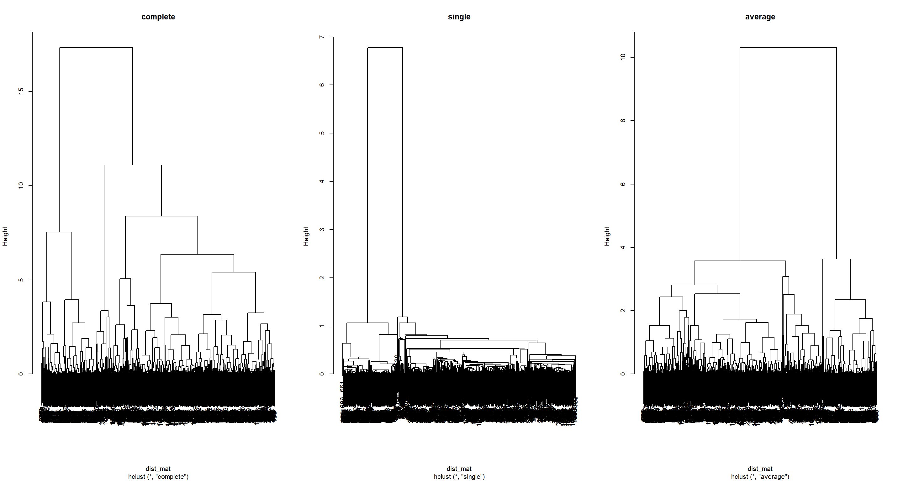
Here, you can see that the type of linkage employed by your hierarchical approach is very important as to how the hierarchy ends up looking like. For now, we run with all of them.
Population Status Classifier
For our population status classifier, let’s obtain our data and cluster number we are after:
Morph_df <- Sparrows_df[, c("Weight", "Height", "Wing.Chord", "Population.Status")]
G <- length(unique(Morph_df[, 4]))
Now we can look at how well our different Hierarchies fair at explaining these categories when cut at the point where the same number of categories is present in the tree:
clusterCut <- cutree(H2_Hierachical_clas1, k = G) # cut tree
table(clusterCut, Morph_df$Population.Status) # assess fit
##
## clusterCut Introduced Native
## 1 682 134
## 2 250 0
clusterCut <- cutree(H2_Hierachical_clas2, k = G) # cut tree
table(clusterCut, Morph_df$Population.Status) # assess fit
##
## clusterCut Introduced Native
## 1 682 134
## 2 250 0
clusterCut <- cutree(H2_Hierachical_clas3, k = G) # cut tree
table(clusterCut, Morph_df$Population.Status) # assess fit
##
## clusterCut Introduced Native
## 1 682 134
## 2 250 0
Interestingly enough, no matter the linkage, all of these approaches get Introduced and Native populations confused in the first group, but not the second.
Let’s look at the decisions that we could make when following a decision tree for this example:
H2_PS_decision <- rpart(Population.Status ~ ., data = Morph_df)
rpart.plot(H2_PS_decision)
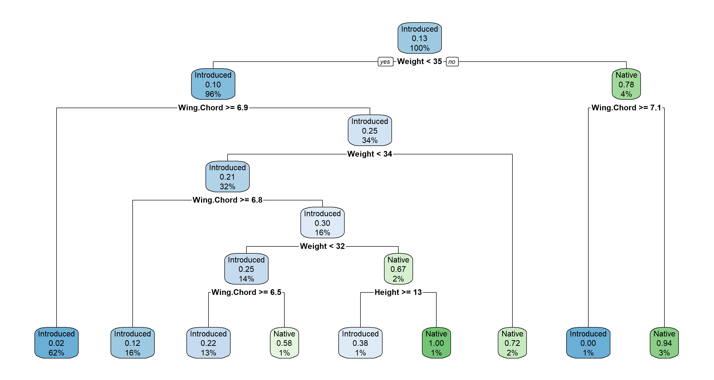
Following this decision tree we first ask “Is our sparrow lighter than 35g?". If the answer is yes, we move to the left and ask the question “Is the wing span of our sparrow greater/equal than 6.9cm?". If the answer is yes, we move to the left and assign this sparrow to an introduced population status. 62% of all observations are in this node and to 2% we believe that this node might actually be a Native node. All other nodes are explained accordingly. More about their interpretation can be found in this PDF Manual.
Site Classifier
Moving on to the site index classifier, we need our data and number of clusters:
Morph_df <- Sparrows_df[, c("Weight", "Height", "Wing.Chord", "Index")]
G <- length(unique(Morph_df[, 4]))
Looking at our different outputs:
clusterCut <- cutree(H2_Hierachical_clas1, k = G) # cut tree
table(clusterCut, Morph_df$Index) # assess fit
##
## clusterCut AU BE FG FI LO MA NU RE SA SI UK
## 1 24 0 0 21 0 15 17 0 0 22 13
## 2 17 0 0 5 3 7 6 0 0 31 5
## 3 19 0 0 29 12 22 21 0 0 13 25
## 4 24 26 0 2 33 5 7 32 16 0 12
## 5 3 0 0 12 4 18 13 0 0 0 13
## 6 0 60 0 0 20 0 0 49 77 0 0
## 7 0 19 0 0 9 0 0 14 21 0 0
## 8 0 0 80 0 0 0 0 0 0 0 0
## 9 0 0 138 0 0 0 0 0 0 0 0
## 10 0 0 16 0 0 0 0 0 0 0 0
## 11 0 0 16 0 0 0 0 0 0 0 0
clusterCut <- cutree(H2_Hierachical_clas2, k = G) # cut tree
table(clusterCut, Morph_df$Index) # assess fit
##
## clusterCut AU BE FG FI LO MA NU RE SA SI UK
## 1 0 0 0 0 0 0 0 0 0 28 0
## 2 87 102 0 69 80 67 64 95 112 32 68
## 3 0 0 0 0 0 0 0 0 0 4 0
## 4 0 0 0 0 0 0 0 0 0 2 0
## 5 0 0 0 0 1 0 0 0 0 0 0
## 6 0 1 0 0 0 0 0 0 0 0 0
## 7 0 2 0 0 0 0 0 0 0 0 0
## 8 0 0 122 0 0 0 0 0 0 0 0
## 9 0 0 126 0 0 0 0 0 0 0 0
## 10 0 0 2 0 0 0 0 0 0 0 0
## 11 0 0 0 0 0 0 0 0 2 0 0
clusterCut <- cutree(H2_Hierachical_clas3, k = G) # cut tree
table(clusterCut, Morph_df$Index) # assess fit
##
## clusterCut AU BE FG FI LO MA NU RE SA SI UK
## 1 44 0 0 15 14 15 22 0 0 45 19
## 2 42 31 0 50 50 49 40 27 0 12 44
## 3 1 0 0 0 0 0 0 0 0 5 0
## 4 0 0 0 0 0 0 0 0 0 4 0
## 5 0 6 0 4 9 3 2 1 0 0 5
## 6 0 34 0 0 0 0 0 35 81 0 0
## 7 0 21 0 0 8 0 0 27 23 0 0
## 8 0 13 0 0 0 0 0 5 10 0 0
## 9 0 0 106 0 0 0 0 0 0 0 0
## 10 0 0 134 0 0 0 0 0 0 0 0
## 11 0 0 10 0 0 0 0 0 0 0 0
We can now see clearly how different linkages have a major impact in determining how our hierarchy groups different observations. I won’t go into interpretations here to save time and energy since these outputs are so busy.
Our decision tree is also excrutiatingly busy:
H2_Index_decision <- rpart(Index ~ ., data = Morph_df)
rpart.plot(H2_Index_decision)
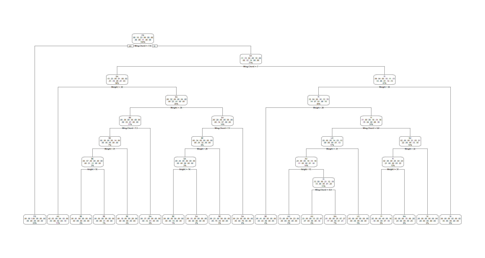
Climate Classifier
Back over to our climate classifier:
Morph_df <- Sparrows_df[, c("Weight", "Height", "Wing.Chord", "Climate")]
G <- length(unique(Morph_df[, 4]))
Let’s look at how the different linkages impact our results:
clusterCut <- cutree(H2_Hierachical_clas1, k = G) # cut tree
table(clusterCut, Morph_df$Climate) # assess fit
##
## clusterCut Coastal Continental Semi-Coastal
## 1 577 105 60
## 2 19 48 7
## 3 250 0 0
clusterCut <- cutree(H2_Hierachical_clas2, k = G) # cut tree
table(clusterCut, Morph_df$Climate) # assess fit
##
## clusterCut Coastal Continental Semi-Coastal
## 1 595 153 67
## 2 1 0 0
## 3 250 0 0
clusterCut <- cutree(H2_Hierachical_clas3, k = G) # cut tree
table(clusterCut, Morph_df$Climate) # assess fit
##
## clusterCut Coastal Continental Semi-Coastal
## 1 596 153 67
## 2 240 0 0
## 3 10 0 0
All of our linkage types have problems discerning Coastal types. I wager that is because of a ton of confounding effects which drive morphological traits in addition to climate types.
Here’s another look at a decision tree:
H2_Climate_decision <- rpart(Climate ~ ., data = Morph_df)
rpart.plot(H2_Climate_decision)
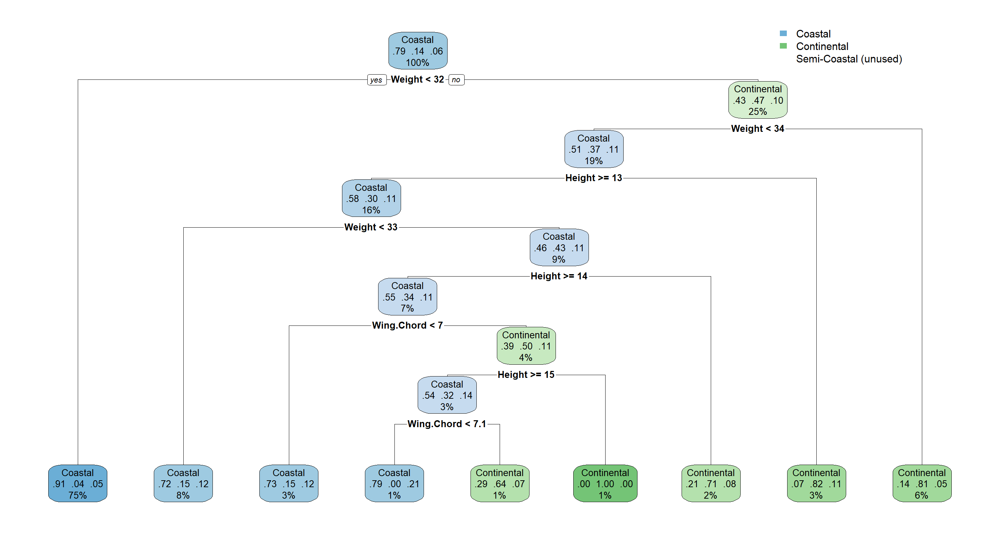
Summary of Hierarchical Clustering
We have seen that site indices may hold some explanatory power regarding sparrow morphology, but the picture is very complex. We may want to keep them in mind as random effects for future models (don’t worry if that doesn’t mean much to you yet).
Random Forest
Random Forests are one of the most powerful classification methods and I love them. They are incredibly powerful, accurate, and easy to use. Unfortunately, they are black-box algorithms (you don’t know what’s happening in them exactly in numerical terms) and they require observed outcomes. That’s not a problem for us with this research project!
Population Status Classifier
Running our random for model for population statuses:
set.seed(42) # set seed because the process is random
H2_PS_RF <- tuneRF(
x = Sparrows_df[, c("Weight", "Height", "Wing.Chord")], # variables which to use for clustering
y = Sparrows_df$Population.Status, # correct cluster assignment
strata = Sparrows_df$Population.Status, # stratified sampling
doBest = TRUE, # run the best overall tree
ntreeTry = 20000, # consider this number of trees
improve = 0.0000001, # improvement if this is exceeded
trace = FALSE, plot = FALSE
)
## -0.08235294 1e-07
Works perfectly.
Random forests give us access to confusion matrices which tell us about classification accuracy:
H2_PS_RF[["confusion"]]
## Introduced Native class.error
## Introduced 902 30 0.03218884
## Native 55 79 0.41044776
Evidently, we are good at predicting Introduced population status, but Native population status is almost as random as a coin toss.
Which variables give us the most information when establishing these groups?
varImpPlot(H2_PS_RF)
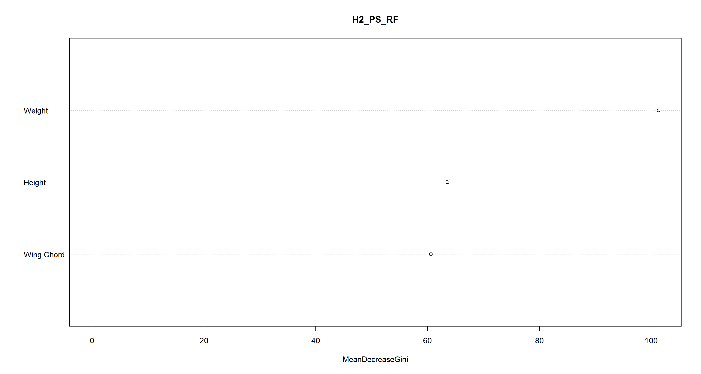
Well look who it is. Weight comes out as the most important variable once again!
Site Classifier
Let’s run a random forest analysis for our site indices:
set.seed(42) # set seed because the process is random
H2_Index_RF <- tuneRF(
x = Sparrows_df[, c("Weight", "Height", "Wing.Chord")], # variables which to use for clustering
y = Sparrows_df$Index, # correct cluster assignment
strata = Sparrows_df$Index, # stratified sampling
doBest = TRUE, # run the best overall tree
ntreeTry = 20000, # consider this number of trees
improve = 0.0000001, # improvement if this is exceeded
trace = FALSE, plot = FALSE
)
## 0.01630435 1e-07
## 0 1e-07
H2_Index_RF[["confusion"]]
## AU BE FG FI LO MA NU RE SA SI UK class.error
## AU 77 0 0 2 8 0 0 0 0 0 0 0.11494253
## BE 0 102 0 0 0 0 0 0 3 0 0 0.02857143
## FG 0 0 250 0 0 0 0 0 0 0 0 0.00000000
## FI 0 0 0 33 0 21 0 0 0 0 15 0.52173913
## LO 9 0 0 0 69 0 0 2 0 0 1 0.14814815
## MA 0 0 0 17 0 26 2 0 0 0 22 0.61194030
## NU 0 0 0 0 0 7 44 0 0 7 6 0.31250000
## RE 0 4 0 0 3 0 0 87 1 0 0 0.08421053
## SA 0 5 0 0 0 0 0 0 109 0 0 0.04385965
## SI 0 0 0 0 0 1 7 0 0 58 0 0.12121212
## UK 0 0 0 14 0 25 1 0 0 0 28 0.58823529
varImpPlot(H2_Index_RF)
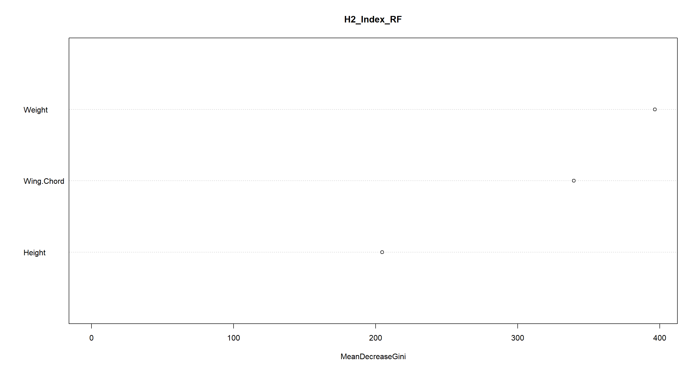
Except for Manitoba and the UK (which are often mistaken for each other), morphology (and mostly Weight) explains station indices quite adequately.
Climate Classifier
Lastly, we turn to our climate classifier again:
set.seed(42) # set seed because the process is random
H2_Climate_RF <- tuneRF(
x = Sparrows_df[, c("Weight", "Height", "Wing.Chord")], # variables which to use for clustering
y = Sparrows_df$Climate, # correct cluster assignment
strata = Sparrows_df$Climate, # stratified sampling
doBest = TRUE, # run the best overall tree
ntreeTry = 20000, # consider this number of trees
improve = 0.0000001, # improvement if this is exceeded
trace = FALSE, plot = FALSE
)
## 0.05172414 1e-07
## -0.02727273 1e-07
H2_Climate_RF[["confusion"]]
## Coastal Continental Semi-Coastal class.error
## Coastal 797 16 33 0.05791962
## Continental 15 137 1 0.10457516
## Semi-Coastal 47 0 20 0.70149254
varImpPlot(H2_Climate_RF)
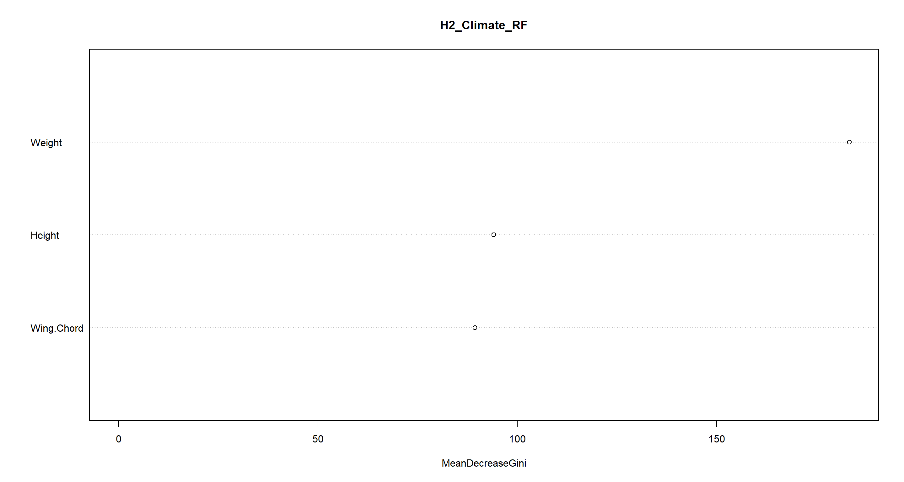
Oof. We get semi-coastal habitats almost completely wrong. The other climate conditions are explained well through morphology, though.
Final Models
In our upcoming Model Selection and Validation Session, we will look into how to compare and validate models. We now need to select some models we have created here today and want to carry forward to said session.
Personally, I am quite enamoured with our models H2_PS_mclust (k-means clustering of population status), H2_PS_RF (random forest of population status), and H2_Index_RF (random forest of site indices). Let’s save these as a separate object ready to be loaded into our R environment in the coming session:
save(H2_PS_mclust, H2_PS_RF, H2_Index_RF, file = file.path("Data", "H2_Models.RData"))
SessionInfo
sessionInfo()
## R version 4.2.3 (2023-03-15)
## Platform: x86_64-apple-darwin17.0 (64-bit)
## Running under: macOS Big Sur ... 10.16
##
## Matrix products: default
## BLAS: /Library/Frameworks/R.framework/Versions/4.2/Resources/lib/libRblas.0.dylib
## LAPACK: /Library/Frameworks/R.framework/Versions/4.2/Resources/lib/libRlapack.dylib
##
## locale:
## [1] en_US.UTF-8/en_US.UTF-8/en_US.UTF-8/C/en_US.UTF-8/en_US.UTF-8
##
## attached base packages:
## [1] stats graphics grDevices utils datasets methods base
##
## other attached packages:
## [1] MASS_7.3-58.2 car_3.1-1 carData_3.0-5 randomForest_4.7-1.1 rpart.plot_3.1.1 rpart_4.1.19 vegan_2.6-4 lattice_0.20-45 permute_0.9-7
## [10] mclust_6.0.0 ggplot2_3.4.1
##
## loaded via a namespace (and not attached):
## [1] styler_1.9.1 tidyselect_1.2.0 xfun_0.37 bslib_0.4.2 purrr_1.0.1 splines_4.2.3 colorspace_2.1-0 vctrs_0.5.2 generics_0.1.3 htmltools_0.5.4
## [11] yaml_2.3.7 mgcv_1.8-42 utf8_1.2.3 rlang_1.0.6 R.oo_1.25.0 jquerylib_0.1.4 pillar_1.8.1 glue_1.6.2 withr_2.5.0 R.utils_2.12.2
## [21] R.cache_0.16.0 lifecycle_1.0.3 munsell_0.5.0 blogdown_1.16 gtable_0.3.1 R.methodsS3_1.8.2 evaluate_0.20 labeling_0.4.2 knitr_1.42 fastmap_1.1.1
## [31] parallel_4.2.3 fansi_1.0.4 highr_0.10 scales_1.2.1 cachem_1.0.7 jsonlite_1.8.4 abind_1.4-5 farver_2.1.1 digest_0.6.31 bookdown_0.33
## [41] dplyr_1.1.0 grid_4.2.3 cli_3.6.0 tools_4.2.3 magrittr_2.0.3 sass_0.4.5 tibble_3.2.0 cluster_2.1.4 pkgconfig_2.0.3 Matrix_1.5-3
## [51] rmarkdown_2.20 rstudioapi_0.14 R6_2.5.1 nlme_3.1-162 compiler_4.2.3